Pneumatikplan_2_without_PLC.pdf · 6 sayfa, tek valf adası. Kapak işi sadece 1. sayfadadır.
QM1 iki büyük silindiri (MM1, MM2) birlikte yürütür. Bunlar kapaktır. Hava kesilince kapağı tutan parça silindirin 2 numaralı portundaki HGL çekvalfidir. Yumuşak kalkış valfi bu planda yoktur.Üstteki sayılar 6 solda, 1 sağda. Soldaki harfler D üstte, A altta. Bir parçanın yeri “sütun + satır”dır. Hava hazırlık 6A’dadır (sol alt). Kapak silindirleri 6D ve 5D’dedir (sol üst).
| Önek | Ne | Örnek |
|---|---|---|
-GQ | Hava hazırlık | GQ1 filtre + regülatör |
-KH | Elle kesme | KH1 |
-AZ1 | Valf adasının kendisi | VTUG, 6 sayfaya yayılmış |
-QM | Adadaki bir solenoid valf | QM1 kapak, QM16 son valf |
-MM | Silindir veya küresel vana aktüatörü | MM1 kapak silindiri |
-DP | Diyafram pompa | DP1, DP2, DP3 |
-RN -RM | Hız ayarı ve pilotlu çekvalf | RN1…RN4, RM1, RM2 |
MB1 MB2 | Valfin iki bobini | Biri bir yön, diğeri ters yön |
Ada havası sayfanın sağ kenarından çıkar, sonraki sayfanın sol kenarından girer. Okun yanındaki /2.E1 “2. sayfadaki E1 ucu” demektir. Son sayfanın sağı XX ile biter: ada burada tükenir. Pompa ve küresel vana sayfaları kapağın havasını değiştirmez; aynı barayı paylaşır.
Parça kodu her sayfanın altında aynıdır: VTUG-14-VRPT-B1T-Q10-U-Q8S-GG14M. Bir manifold, üzerinde 16 yön valfi. Elektrik kutusu ve konum sensörü çizilmemiştir. Bobinler çizilidir; “PLC’siz” sensörsüz ve emniyet PLC’siz demektir, bobinsiz demek değildir.
| Sayfa | Valfler | Ne çalıştırır |
|---|---|---|
| 1 | QM1, QM2, QM3 | Kapak MM1+MM2. İki grup kısa silindir MM3–MM7 ve MM8–MM12 |
| 2 | QM4, QM5, QM6 | Yıkama boşaltma pompası DP1, boşaltma küresel vanası MM13, durulama→yıkama pompası DP2 |
| 3 | QM7, QM8, QM9 | Emme küresel MM14, basma küresel MM15, durulama besleme pompası DP3 |
| 4 | QM10, QM11, QM12 | Durulama besleme küresel MM16, yıkama dönüş MM17, durulama dönüş MM18 |
| 5 | QM13, QM14, QM15 | Kabin taze hava MM19, buhar fanı MM20, kapak tahliye küresel MM22 |
| 6 | QM16 | İkinci buhar fanı MM21. Adanın sonu |
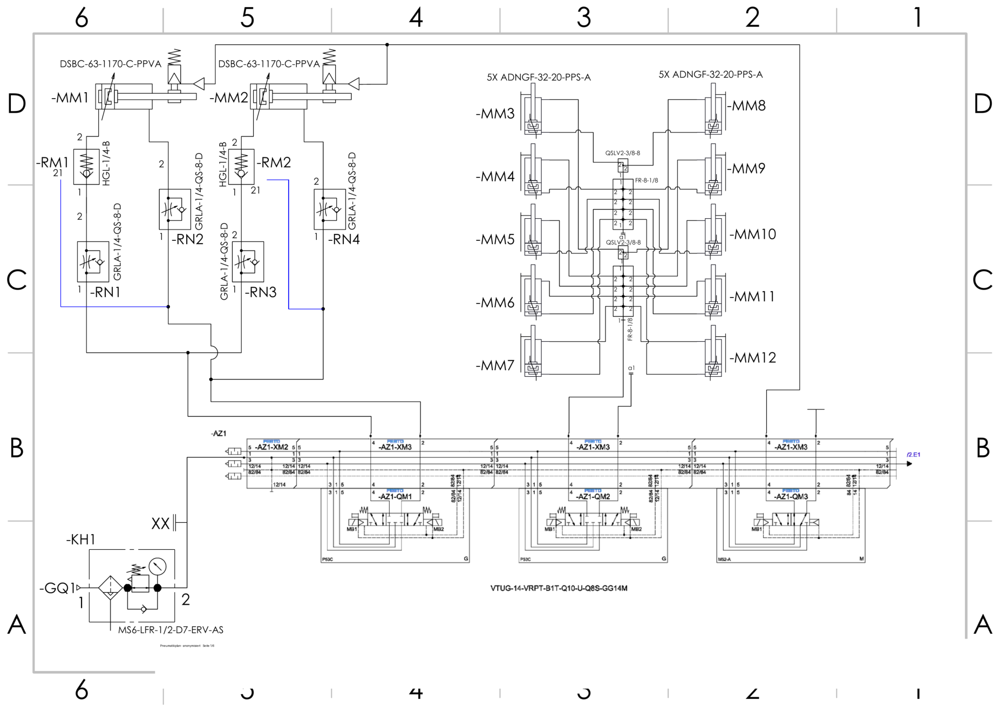
Sayfa 1. Sol üst kapak. Sol alt hava. Alt şerit valf adası. Sağ üst kısa silindirler.
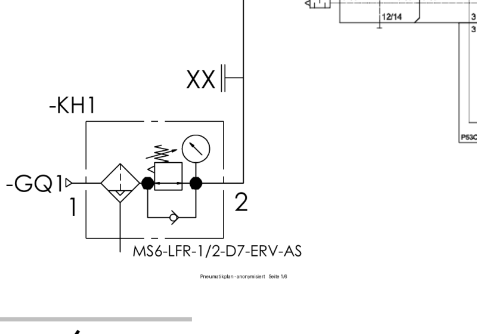
6A. KH1 elle kesme, GQ1 filtre-regülatör, çıkış 2 adaya gider.
Regülatörden sonra ayrı bir “ana valf” veya yavaş doldurma valfi yoktur. Basınç, regülatör açıkken adanın üzerinde hazır bekler. Hangi işin yürüyeceğine adadaki bobin karar verir.
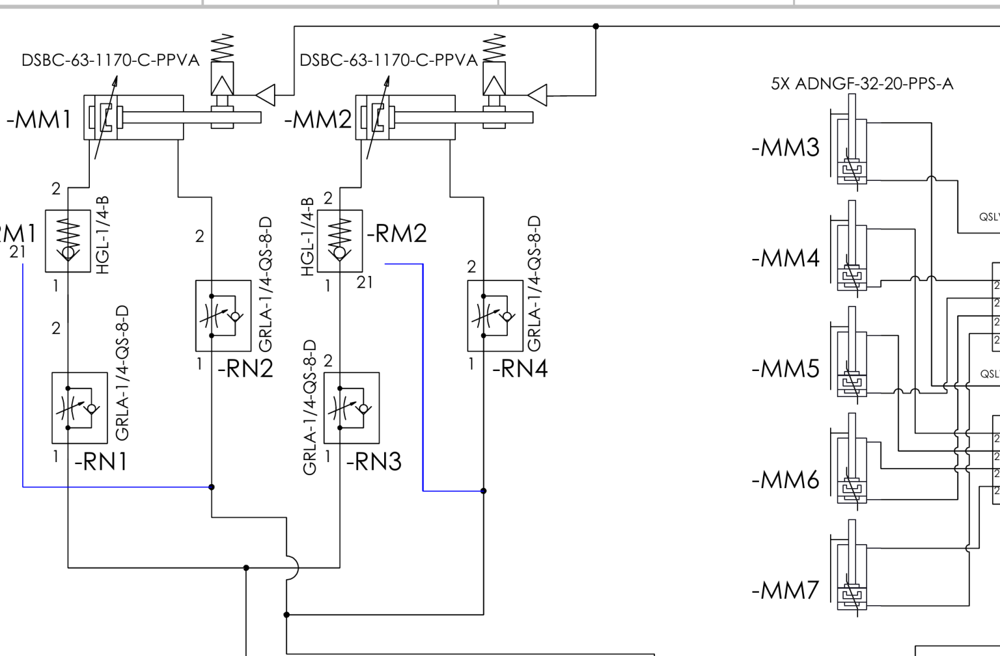
İki silindir paralel. Aynı QM1’den beslenir. Mavi çizgiler hız ayarının pilotunu karşı hatta bağlar.
| Etiket | Parça | Görevi |
|---|---|---|
| MM1, MM2 | DSBC-63-1170-C-PPVA | Ø63 mm, strok 1170 mm, çift etkili. İkisi bir kapağı taşır. Konum sensörü yok. Üstteki yay sembolü yastıklamadır, elektrikli fren değildir. |
| RM1, RM2 | HGL-1/4-B | Pilotlu çekvalf. Sadece 2 numaralı porta takılı. Hava gidince o odayı kilitler. |
| RN1…RN4 | GRLA-1/4-QS-8-D | Hız ayarlı çekvalf, hortum 8 mm. Her iki portta var. İnişi ve çıkışı ayrı kısar. |
İki silindirin aynı numaralı portları birbirine bağlıdır. QM1 bir yöne çekilince ikisi birlikte uzar, diğer bobin çekilince ikisi birlikte toplanır. Biri açıp diğeri kapatan bir valf değildir.
HGL, kapıya takılan bir çekvalftir. Tek başına elektrik istemez. Yanındaki ince hat pilottur: karşı iş hattında basınç varsa çekvalf açılır ve oda boşalabilir. Karşı hatta basınç yoksa çekvalf kapanır, port 2’deki hava içeride kalır.
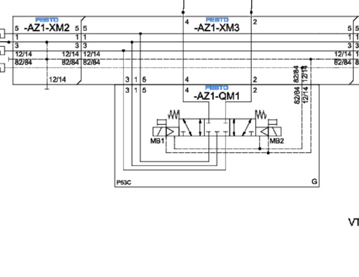
Altta P53C yazar. İki yanda bobin MB1 ve MB2, ikisinde de yay.
P53C Festo’da 5/3, orta konumda tüm portlar kapalı demektir. Beş yollu: basınç, iki iş hattı, iki egzoz. Üç konum:
| Konum | Ne olur |
|---|---|
| MB1 enerjili | Bir iş hattı basınca, diğeri egzoza bağlanır. Kapak bir yöne gider. |
| MB2 enerjili | Hatlar ters döner. Kapak diğer yöne gider. |
| İkisi de enerjisiz | Yaylar valfi ortaya alır. Basınç da iş hatları da egzoz da tıkalıdır. HGL zaten port 2’yi tutuyordur. |
İki bobin aynı anda çekilmez. Orta konum “havayı boşalt” değildir; hatları tıkar. Bu yüzden kapağı düşmekten koruyan asıl parça QM1’in ortası değil, HGL’dir.
Sembole giren 12/14 ve 82/84 uçları bobinlerin elektrik ve pilot hatlarıdır. 1 basınç, 2 ve 4 iş, 3 ve 5 egzoz, G ortak egzoz barasıdır.
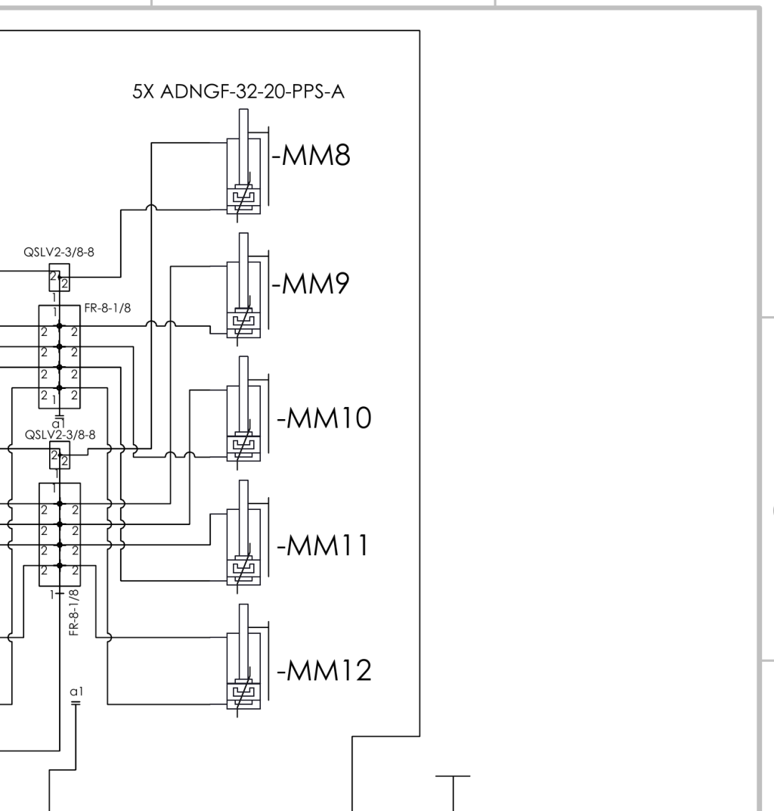
Sayfa 1’in sağ yarısı kapak değildir.
İki grup, her biri 5 adet ADNGF-32-20-PPS-A. Çap 32 mm, strok sadece 20 mm. MM3–MM7 bir valfe (QM2), MM8–MM12 diğer valfe (QM3) bağlıdır. Grup içindeki silindirler paraleldir: bir bobin beşi birden yürütür. HGL yoktur. Kapak devresine karıştırma.
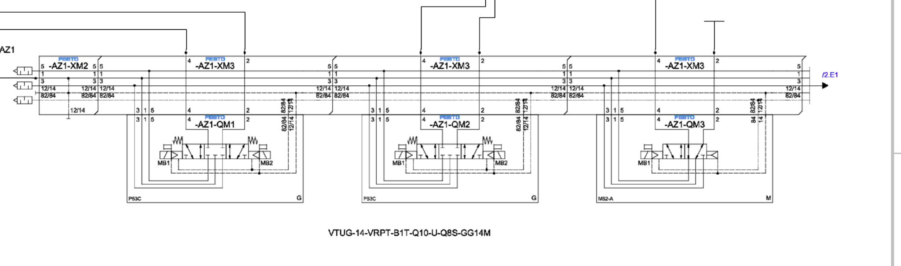
Sayfa 1’de üç valf yuvası: QM1, QM2, QM3. Üstteki düz çizgiler adanın ortak basınç ve egzoz baralarıdır.
Okuma sırası her yuva için aynıdır, 2–6. sayfalarda da değişmez:
1 numaralı porta basınç iner.2 ve 4 yukarı çıkar, o sayfadaki silindire veya pompaya gider.3 ve 5 egzoz barasına döner.Yani “ana valf ayrı, kapak valfi ayrı” diye iki kademe yoktur. Regülatör adayı doldurur. Her QM kendi tüketicisinin hem açma hem kapatma valfidir.
Hepsi aynı ada şerididir. Üstte tüketici, altta onu süren QM. Kapak pistonuna hortum gitmez.
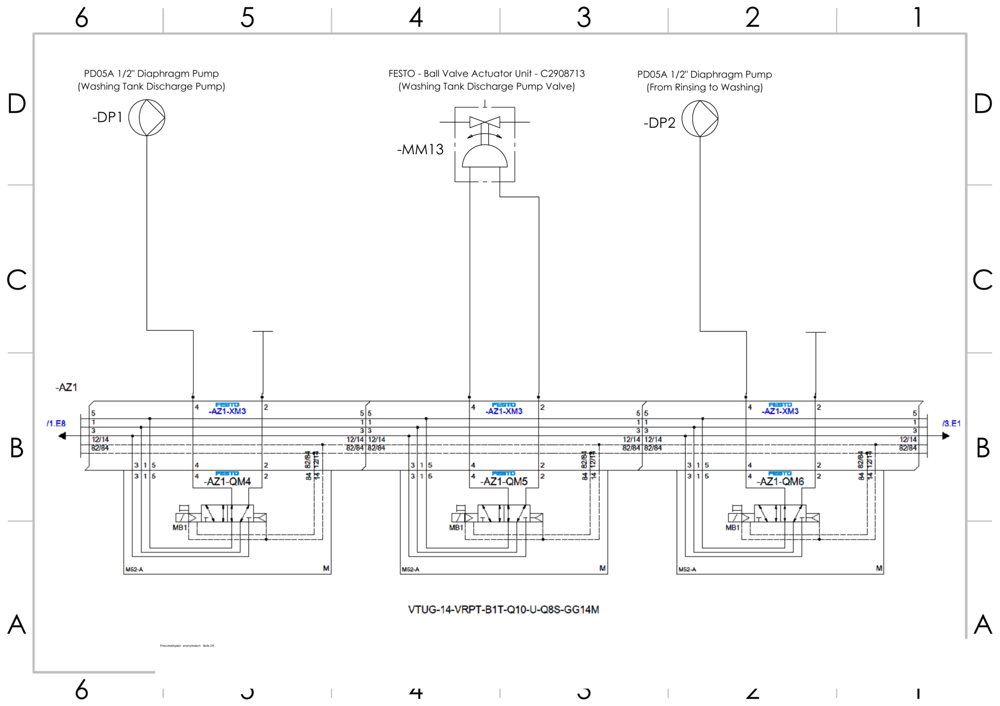
| Valf | Tüketici | Ne |
|---|---|---|
| QM4 | DP1 | PD05A 1/2" diyafram pompa. Yıkama tankı boşaltma |
| QM5 | MM13 | Küresel vana aktüatörü C2908713. Yıkama boşaltma vanası |
| QM6 | DP2 | PD05A 1/2" pompa. Durulamadan yıkamaya |
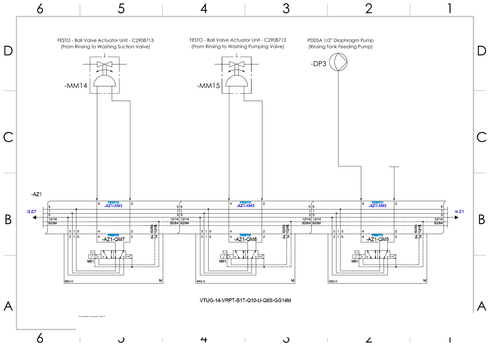
| Valf | Tüketici | Ne |
|---|---|---|
| QM7 | MM14 | Küresel. Durulamadan yıkama emiş vanası |
| QM8 | MM15 | Küresel. Durulamadan yıkama basma vanası |
| QM9 | DP3 | PD05A 1/2" pompa. Durulama tankı besleme |
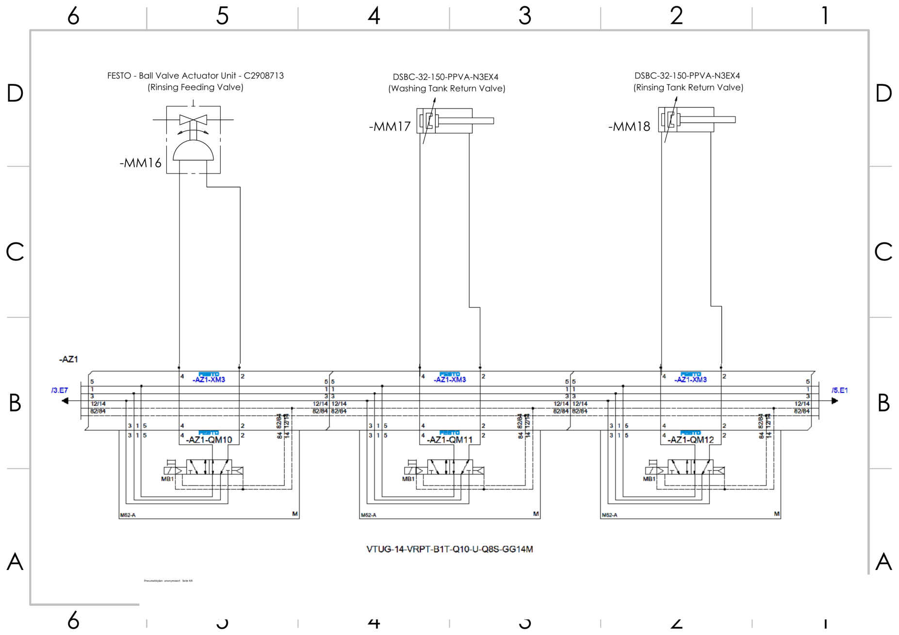
| Valf | Tüketici | Ne |
|---|---|---|
| QM10 | MM16 | Küresel. Durulama besleme vanası |
| QM11 | MM17 | DSBC-32-150. Yıkama tankı dönüş vanası |
| QM12 | MM18 | DSBC-32-150. Durulama tankı dönüş vanası |
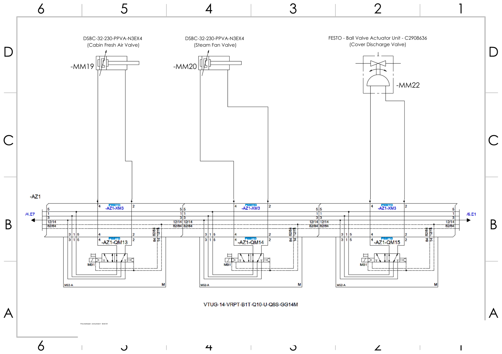
| Valf | Tüketici | Ne |
|---|---|---|
| QM13 | MM19 | DSBC-32-230. Kabin taze hava klapesi |
| QM14 | MM20 | DSBC-32-230. Buhar fanı klapesi |
| QM15 | MM22 | Küresel C2908636. Kapak tahliye vanası. Kapak silindiri değildir |
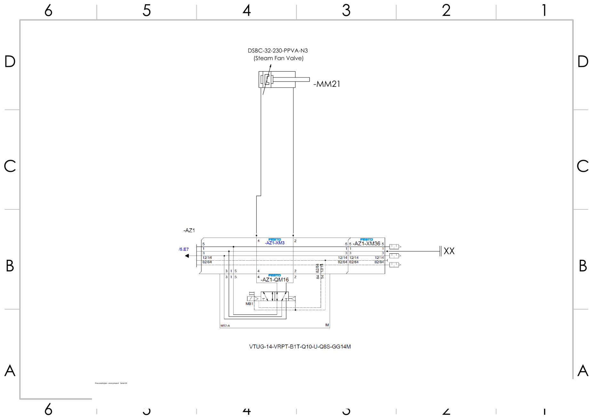
QM16 → MM21, DSBC-32-230, ikinci buhar fanı klapesi. Sağ uç XX: ada biter. Başka sayfa yoktur.
Regülatör → ana valf (kesme) → 5/3 → piston. Ana valf yumuşak kalkışlı değil. Kapanış hattında çekvalf var; bu çekvalf HGL gibi pilotlu tutma olmak zorunda değil.
Regülatör → doğrudan ada → QM1 (P53C, 5/3 kapalı orta) → iki silindir. Ana valf kademesi yok. Tutma, port 2’deki HGL.
Kurulacak sıra, bu çizimdeki gibi regülatörden yön valfine gitmektir. Yumuşak kalkış eklenecekse o, regülatör ile QM1’in arasına girer ve senin ana valfinin yerini alır. Regülatör → yumuşak kalkış → bir de eski ana valf → 5/3 diye iki kesme art arda konmaz.
| Bu plandaki parça | Sende karşılığı |
|---|---|
| KH1 + GQ1 | Regülatör. SMC’de VHS40 + AW40 |
| Yok | AV4000 yavaş başlatma, bu PDF’te çizili değil |
| QM1 P53C | Senin kapak aç/kapat 5/3’ün |
| HGL port 2 | SMC setinde bunun yerine silindirin kendi mil freni var |
| GRLA | Hız ayarın. Yerinde kalabilir |
| MM1 + MM2 | İki kapak pistonu |